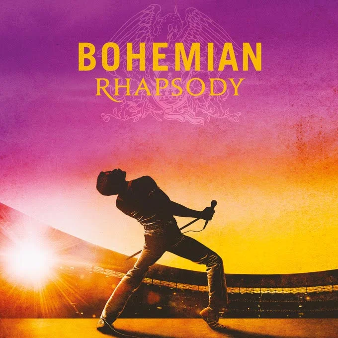

Desarrollo backend con Java
Lógica y funcionalidades del lado del servidor.





Elige una paleta y observa cómo cambian los colores de la vista previa y sus variables CSS.
La vista previa y los valores CSS muestran la paleta elegida.
--retro-primary: #00f0ff; --retro-bg: #0b0d17;